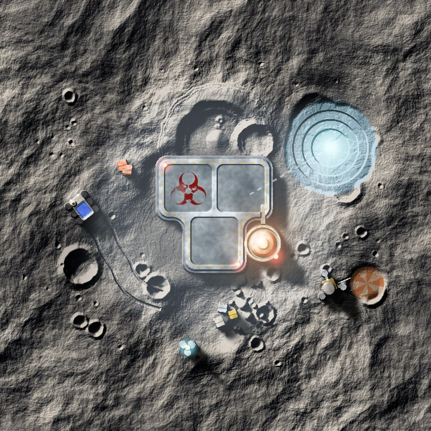
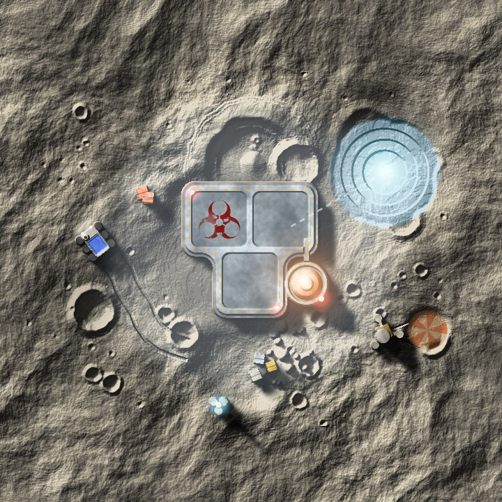
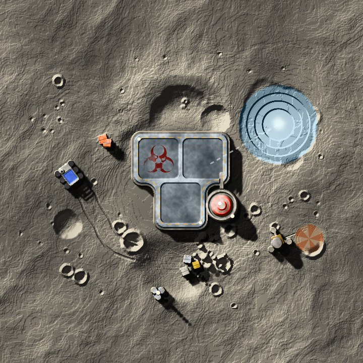
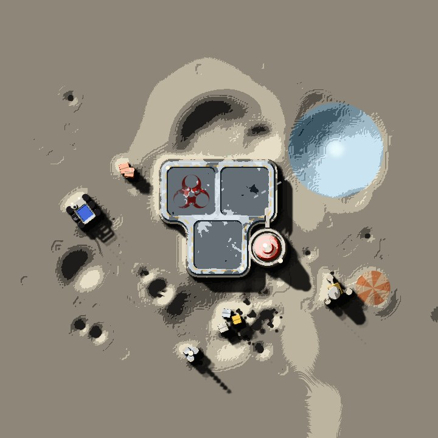
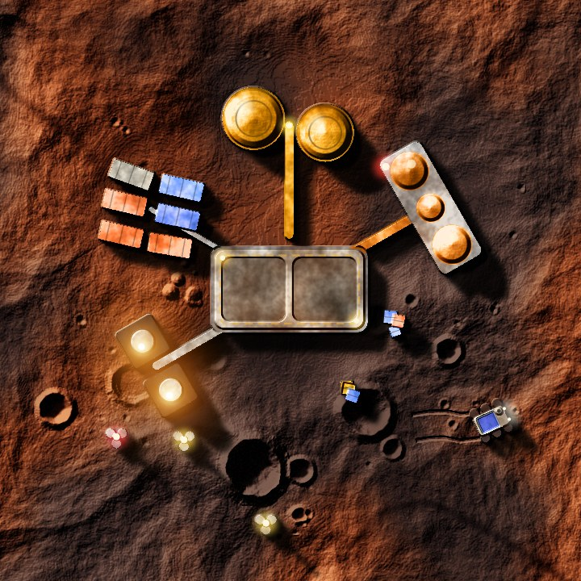
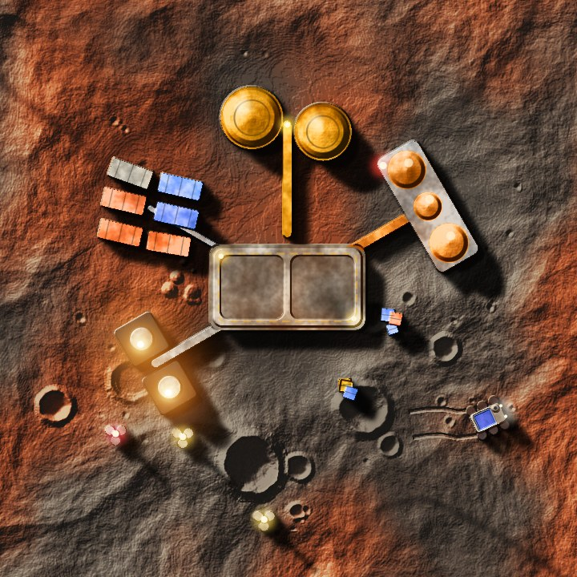
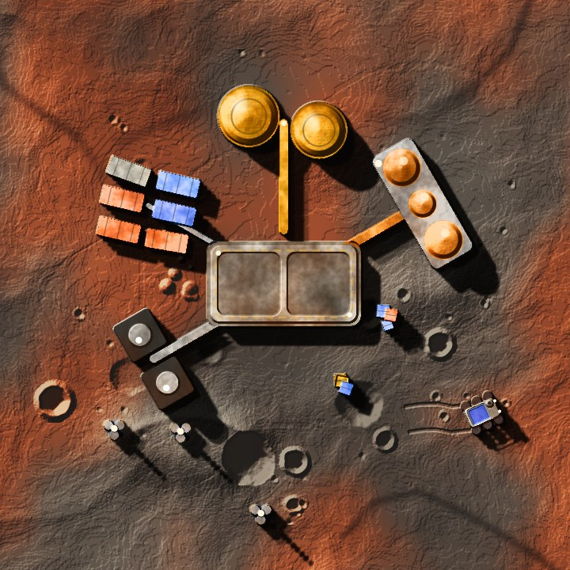
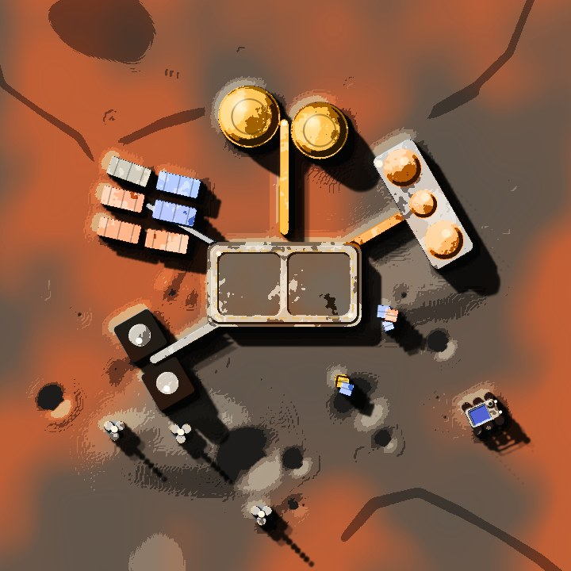

The same two tiles from the game's own renderer, four ways, moving towards the mechs' flat inks. The mechs from the Silhouettes board stand on them as counters, in the blue and red sides' rings.
MOON · TILE 9, ICE MINE

0 TODAY
The game as it is: fine noise and grain, soft black shadows, glowing buildings.

1 RECOLOURED
Only the colours: key ink up to bone on the moon, ink to oxide and Jupiter on Mars. Light and detail as today.

2 QUIETER
Then a third of the fine noise, no grain, solid ink shadows with crisp edges, and the glows switched off.

3 SCREENPRINT
Then the relief smoothed and cut into five flat inks, with halftone over it. The buildings only have their light banded here; they would be redrawn flat.
MARS · TILE 8, REFINERY

0 TODAY
The game as it is: fine noise and grain, soft black shadows, glowing buildings.

1 RECOLOURED
Only the colours: key ink up to bone on the moon, ink to oxide and Jupiter on Mars. Light and detail as today.

2 QUIETER
Then a third of the fine noise, no grain, solid ink shadows with crisp edges, and the glows switched off.

3 SCREENPRINT
Then the relief smoothed and cut into five flat inks, with halftone over it. The buildings only have their light banded here; they would be redrawn flat.
WHERE THE MECHS STAND · TODAY AND SCREENPRINT, LARGE
0 TODAY
3 SCREENPRINT
Each look is the game's ground filter (packages/art regolith/light.ts) with its colours, noise and shadows changed, rendered in Chrome; nothing is painted over by hand except the halftone, the hex lines and the counters.